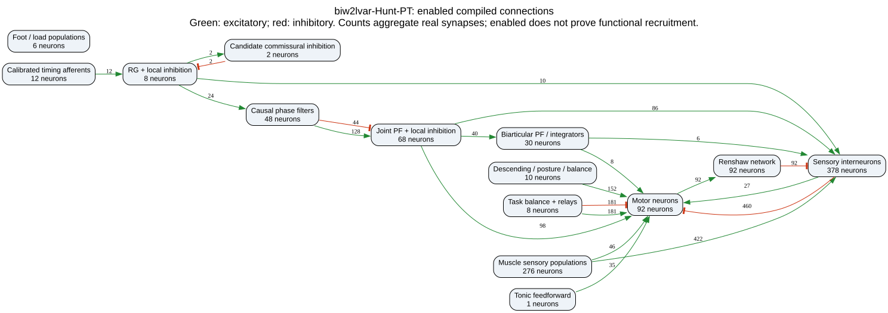
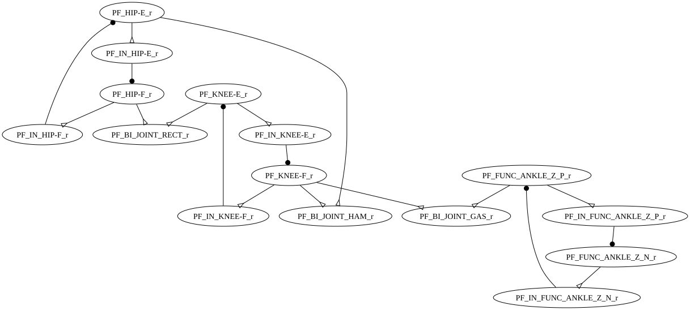
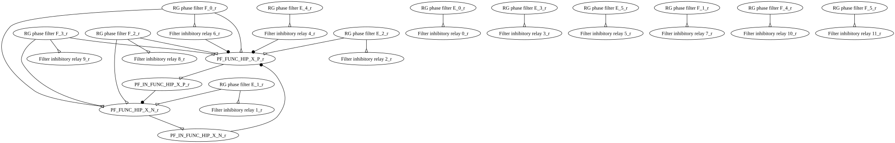
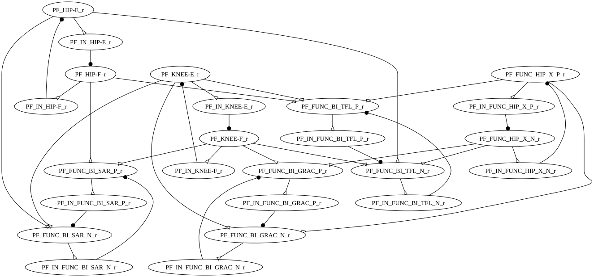
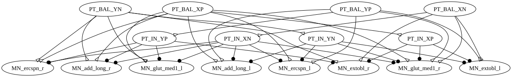

rhythm

These diagrams come from compiled conductances, not literature expectations. A candidate commissural pathway is built. Ia reciprocal inhibition is enabled in this candidate. IIX/IIIN/Renshaw outputs to MNs remain disabled. The raw export retains disabled edges; the editor export contains enabled edges only. Walking-expression gating at this recorded pose is not proof of walking.
1031 neurons · 424 inputs. Overview: green excites, red inhibits. Detailed panels use the SNS-Toolbox renderer and omit boundary edges for readability.
Timing afferents 0–5: hip-flexor II, hip-extensor II, hip-flexor Ia, hip-extensor Ia, ankle-extensor Ib, and knee-extensor Ib. HUNT_BANK cells are causal phase filters, not extra biological oscillators. Joint PF pairs retain inhibitory relays. HAM/RECT/GAS use single integrating populations; SAR/GRAC/TFL retain paired engineering modules.





Import JSON for your connectome editor · Full compiled edge data, including disabled connections